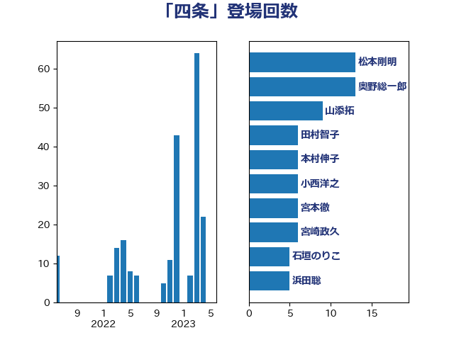

単語「四条」

| 松本剛明 | 自由民主党 | 13 回 |
| 奥野総一郎 | 立憲民主党 | 13 回 |
| 山添拓 | 日本共産党 | 9 回 |
| 田村智子 | 日本共産党 | 6 回 |
| 本村伸子 | 日本共産党 | 6 回 |
| 小西洋之 | 立憲民主党 | 6 回 |
| 宮本徹 | 日本共産党 | 6 回 |
| 宮崎政久 | 自由民主党 | 6 回 |
| 石垣のりこ | 立憲民主党 | 5 回 |
| 浜田聡 | NHK党 | 5 回 |
| 安江伸夫 | 公明党 | 5 回 |
| 塩村あやか | 立憲民主党 | 5 回 |
| 石橋通宏 | 立憲民主党 | 4 回 |
| 串田誠一 | 日本維新の会 | 4 回 |
| 足立康史 | 日本維新の会 | 3 回 |
| 赤嶺政賢 | 日本共産党 | 3 回 |
| 新藤義孝 | 自由民主党 | 3 回 |
| 伊東信久 | 日本維新の会 | 3 回 |
| 高市早苗 | 自由民主党 | 2 回 |
| 長妻昭 | 立憲民主党 | 2 回 |
| 西村智奈美 | 立憲民主党 | 2 回 |
| 神谷宗幣 | 参政党 | 2 回 |
| 石川香織 | 立憲民主党 | 2 回 |
| 玉木雄一郎 | 国民民主党 | 2 回 |
| 津島淳 | 自由民主党 | 2 回 |
| 河野太郎 | 自由民主党 | 2 回 |
| 櫻井周 | 立憲民主党 | 2 回 |
| 柳ヶ瀬裕文 | 日本維新の会 | 2 回 |
| 杉尾秀哉 | 立憲民主党 | 2 回 |
| 打越さく良 | 立憲民主党 | 2 回 |
| 小林鷹之 | 自由民主党 | 2 回 |
| 吉田統彦 | 立憲民主党 | 2 回 |
| 中谷一馬 | 立憲民主党 | 2 回 |
| 階猛 | 立憲民主党 | 1 回 |
| 鈴木英敬 | 自由民主党 | 1 回 |
| 鈴木俊一 | 自由民主党 | 1 回 |
| 芳賀道也 | 国民民主党 | 1 回 |
| 舞立昇治 | 自由民主党 | 1 回 |
| 穀田恵二 | 日本共産党 | 1 回 |
| 福島みずほ | 社会民主党 | 1 回 |
| 田村貴昭 | 日本共産党 | 1 回 |
| 田村まみ | 国民民主党 | 1 回 |
| 浜地雅一 | 公明党 | 1 回 |
| 森本真治 | 立憲民主党 | 1 回 |
| 森屋隆 | 立憲民主党 | 1 回 |
| 柴山昌彦 | 自由民主党 | 1 回 |
| 柚木道義 | 立憲民主党 | 1 回 |
| 杉田水脈 | 自由民主党 | 1 回 |
| 本田顕子 | 自由民主党 | 1 回 |
| 末松信介 | 自由民主党 | 1 回 |
| 掘井健智 | 日本維新の会 | 1 回 |
| 徳永エリ | 立憲民主党 | 1 回 |
| 後藤茂之 | 自由民主党 | 1 回 |
| 後藤祐一 | 立憲民主党 | 1 回 |
| 岸真紀子 | 立憲民主党 | 1 回 |
| 山崎誠 | 立憲民主党 | 1 回 |
| 山下芳生 | 日本共産党 | 1 回 |
| 小沼巧 | 立憲民主党 | 1 回 |
| 宮本岳志 | 日本共産党 | 1 回 |
| 天畠大輔 | れいわ新選組 | 1 回 |
| 國重徹 | 公明党 | 1 回 |
| 北神圭朗 | 無所属 | 1 回 |
| 勝部賢志 | 立憲民主党 | 1 回 |
| 勝目康 | 自由民主党 | 1 回 |
| 井坂信彦 | 立憲民主党 | 1 回 |
| 井出庸生 | 自由民主党 | 1 回 |
| 上田清司 | 国民民主党 | 1 回 |